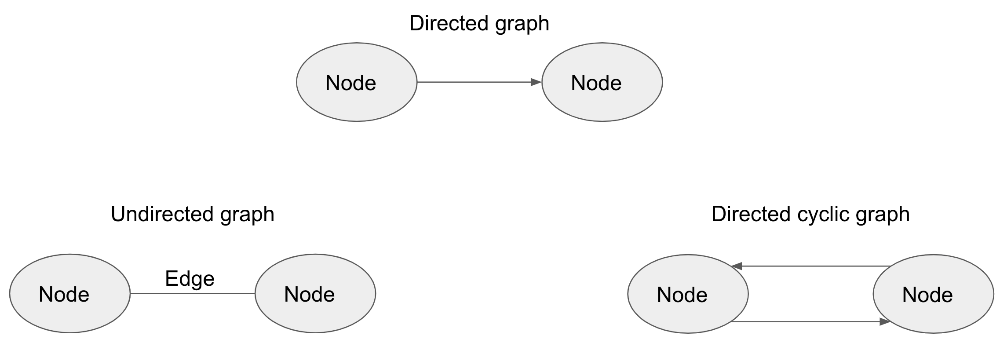
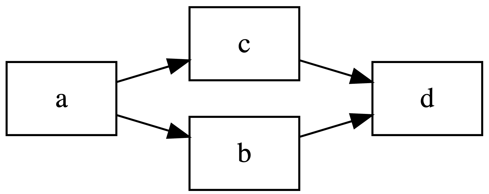
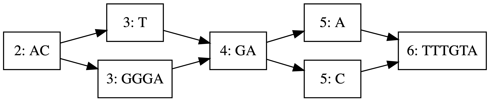

An Introduction to Variation Graphs
Background
This post is aimed at both programmers and biologists; for this reason, I will try to bring the reader up to speed on a topic before going into it. If you feel that you’re already familiar with a concept feel free to skip the sentence, paragraph or even section.
Genome sequencing
A genome is the entire genetic code of an organism. While computational data is represented in binary form, ones and zeros, biochemical data is represented by nitrogenous bases that seem to stick out of a DNA or RNA molecule/strand abbreviated A,T,C and G for DNA and A,G,C and U for RNA. The reason RNA matters in this context is because some viruses have RNA and not DNA.
If this is confusing, you can think of a strand of DNA or RNA as a thread with knots where each knot is a base.
A sequence is an ordering of something. A programming analogue would be sequences vs collections. Sequences are ordered, for example lists, and therefore have the potential for a next and a previous element while collections are just data thrown together, for example a dictionary or a set.
Genome sequencing (or sequencing a genome) therefore, is determining the order of bases in all of the DNA or RNA in an organism. What makes this easy is that all the cells in an individual organism have the same exact DNA so we can get all the DNA in an organism from a single cell. In practice however, we can’t work with a single cell due to it’s size. Ignore chromosomes, haplotypes and other things you may know about DNA for now.
To determine the sequence of bases in an entire genome of an organism we focus on only one of the chromosomes (a haplotype) and only one strands of the double helix. Since 2005 we’ve used methods broadly categorized under Next Generation Sequencing (NGS) to perform genome sequencing. There are two main ways of performing NGS:
- Shear the DNA into small fragments, sequence those and try to build back the original sequence. An analogy that’s used is shredding a newspaper article then trying to recreate it.
- Run the DNA strand like a train would run through a tunnel through a pore and read the sequence of bases. There are other methods of reading entire strands of DNA but they don’t matter in this context.
As you would expect, each method has its drawbacks and advantages. What we get out of the machine that does the actual sequencing of DNA is called a read and reads have to be aligned and assembled[2]. Alignment involves stacking reads on top of each other and assembling is the entire process that involves alignment,algorithmically choosing the best alignment and determining what the original sequence was.
There are two broad categories of assembly[4]:
- De-novo assembly: this is where we sequence a genome that has never been sequenced before
- Mapping assembly: this is sequencing an organism’s unique code despite having the general sequence for the species. What you get from services like 23andMe.
The reference genome
A reference genome is a consensus sequence that accepted as the genome of a species [2]. It’s stored as one long sequence of characters/bases. You may wonder “How we can have a known genome of an entire species when every individual has a unique genetic code?” or “If everyone is different, how are humans 99% chimp?”. Well the answer is that most organism’s genetic code is similar and this similarity increases as we narrow down taxonomically. When we say that a human is closer to a chimp than a monkey it’s because we can see more differences between the genomes of the two man+chimp vs monkey than man vs chimp alone.
Variation in genomes
However, there are still differences that make us different from one another and they shouldn’t be ignored. A better way to describe them is to say that the differences are segregating within the population, We may also want to carry out comparison between species or between related species which is done in pangenomics.
DNA has sections which are identical between individuals (conserved regions), and the number of these sections grows as we narrow down taxonomically and there are sections which vary between individuals, for example the short sequence repeats that are compared in paternity testing.
Graph theory is an area in math that can helps us understand variable regions within genomes. The idea of representing genomes as graphs isn’t new, however, the low number of tools like vg which apply graph theory to genomics and the little that we know about genomes has been an issue.
Graphs
A graph is a series of vertices (also known as nodes) and edges. 
For genome graphs we focus on directed acyclic graphs.
A walk in a directed graph is traversal from one node to another through an edge for example, a to b to d or a to c to d. 
The current state of affairs
Once the reference genome of an organism has been determined, it is stored in fasta format which contains the sequence and metadata. Moving forward, anyone sequencing the same species aligns against this reference. Differences that occur in less than 1% of the reads are usually thrown out; the ones that aren’t thrown out however don’t help to update the reference but are however stored in Variant Call Format (VCF) which contains the variation data and their positions plus metadata. These VCF files are spread out amongst researchers and aid in the particular thing being researched but generally don’t contribute in and of themselves to the general genomic body of knowledge. However, every once in a while the reference is updated but not on a fixed schedule [2]. It’s for this reason that the variation graph would be a good way of representing the reference. There has also been research that shows that short reads align better to the graph than they do to a reference [3].
Graphs and genomes
Graphs that are applied to genomes are generally called genome graphs. However there are two more specific categories which are sequence graphs and variation graphs.
As an example assume that we zoom on a hypothetical reference: “ACTGAATTTGTA”
| Variation | Position | Alternative |
|---|---|---|
| Variation1 | 2 | GGGA |
| Variation2 | 4 | C |
We could recursively insert Variation1 at position 2 and Variation2 at position 4 to generate the graph below:
 (generated using graphite and my current fork of graph)
In this case a single walk would represent a possible genome. Compared to the reference, this variation information is maintained and the graph still holds the data that was in reference.
Sequence Graphs
This are graphs with sequence labels on the nodes or edges.
Sequence graphs or equivalent structures have been used previously to represent multiple sequences that contain shared differences or ambiguities in a single structure. Related structures used in genome assembly which collapse long repeated sequences, so the same nodes are used for different regions of the genome include the De Bruijn graph.[5] Graphs to represent genetic variation have previously been used for microbial genomes & localized regions of the human genome such as the major histocompatibility complex.
Variation Graphs
A variation graph is a sequence graph together with a set of paths representing possible sequences from a population.
Variation graphs and RSV
Human orthopneumovirus, formerly known as Respiratory Syncytial Virus (RSV), is a single stranded RNA virus and a good candidate for exploration using the variation graph because viruses don’t have proofreading in their genetic code. Proofreading is a process in which the cell ensures that it has copied the genetic code correctly in preparation for cell division. Without proofreading errors will be common leading to high mutation rates. Another advantage is the size of its genome; the reference stands at 15,206 bases which translates to 15206 bytes or 14.8 KB of memory.
Generating a variation graph
I’m going to describe the method used by graphite for building the graph. As of writing this, graphite can’t generate a graph out of reads alone. It supports a reference in fasta and a single VCF file.
Algorithm
The general idea is:
- Read in the entire reference into memory
- Treat this reference as a single string (no streaming, storing as integers, bytestring or any fancy optimizations)
- Create a singleton list that holds this string
- This singleton list is a single node graph
Read a variton into memory of position p and variation sequence or SNP var
Update the graph by
- Create a singleton list holding the variation,
var. - Split the string in the node we are interested in at
pinto:prevseq-at-posnext
- Create a new list containing nested lists (dynamic tree?).
[
prev,
[var, [next]],
[[seq-at-pos], next]
]Variation
A variation is a struct of position and sequence.
I’m using the racket graph library graph to generate a graph out of the nested lists and I’m treating the graph as a “dynamic tree”.
We then rely on graph to generate an unweighted directed graph through unweighted-graph/directed. We export the graph in dot format and visualize for now, serialization isn’t yet implemented.
References
- Adam M. Novak, Erik Garrison, Benedict Paten A graph extension of the positional burrows-wheeler transform and its applications bioRxiv 051409; doi: https://doi.org/10.1101/051409
- Church DM, Schneider VA, Graves T, Auger K, Cunningham F, Bouk N, et al. (2011) Modernizing Reference Genome Assemblies. PLoS Biol 9(7): e1001091. https://doi.org/10.1371/journal.pbio.1001091
- Garrison, Erik & Sirén, Jouni & M Novak, Adam & Hickey et al. (2018). Variation graph toolkit improves read mapping by representing genetic variation in the reference. Nature Biotechnology. 36. 10.1038/nbt.4227
- Wolf, Beat. “De novo genome assembly versus mapping to a reference genome” (PDF). University of Applied Sciences Western Switzerland. Retrieved 6 April 2019.
- Holley, Guillaume & Peterlongo, Pierre. (2012). BLASTGRAPH: Intensive approximate pattern matching in sequence graphs and de-Bruijn graphs. Proceedings of the Prague Stringology Conference, PSC 2012.